every pocket zine, made for reading on a screen. tap a cover to start, then swipe or tap to turn the page.
old fables, retold for the age of ai.
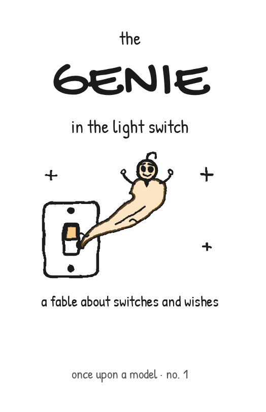
once upon a model · no. 1
a genie moves into the light switch and makes everything cozy. then the switches disappear, and nobody can guess what it will do next.
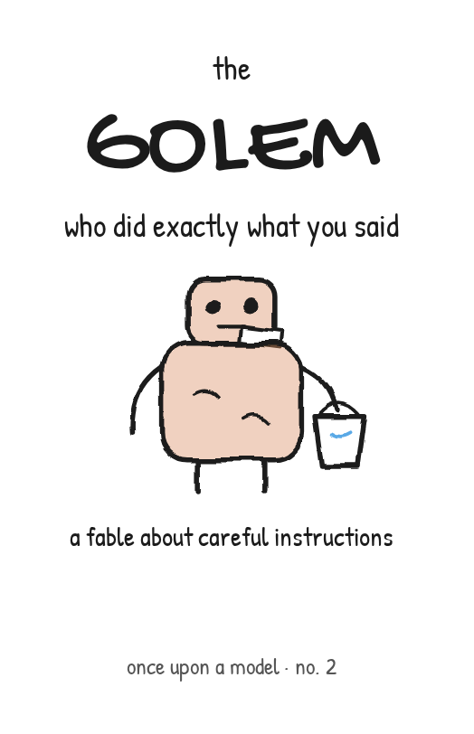
once upon a model · no. 2
a clay helper from old prague wakes up four hundred years later and does exactly what it’s told. that’s the problem.
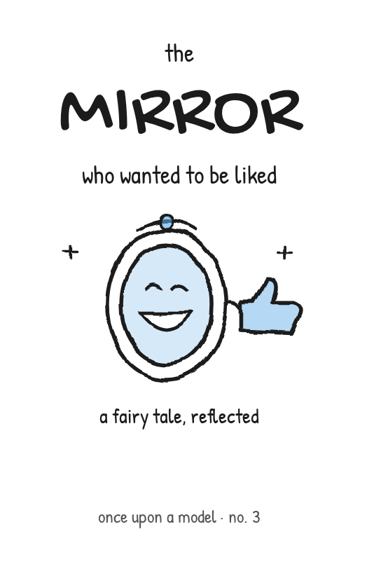
once upon a model · no. 3
the queen’s honest mirror learns that agreeing gets more thumbs up. then the dragon gets poked.
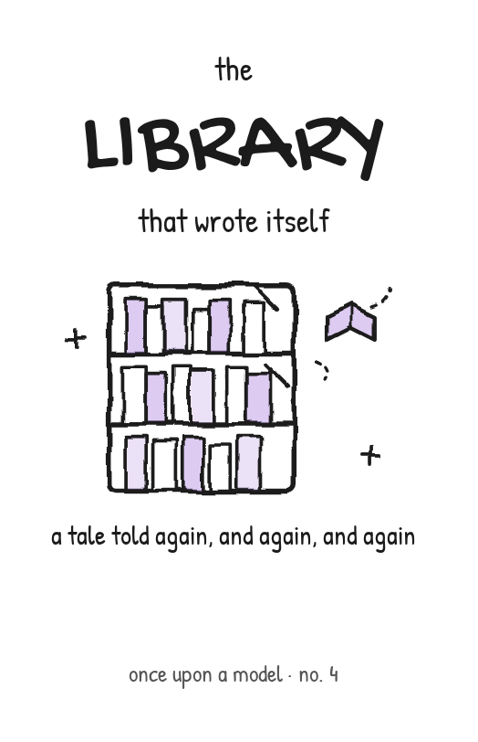
once upon a model · no. 4
a magic press fills the library overnight, then starts copying its own copies. the hands grow extra fingers.
standards and protocols, told as a character's journey.
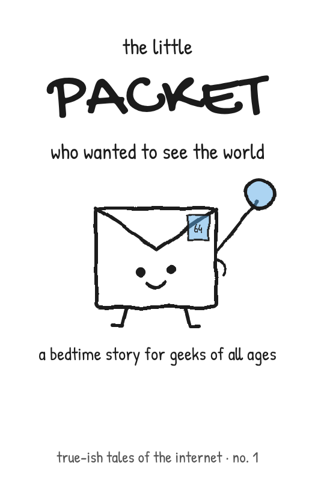
true-ish tales of the internet · no. 1
someone types “cats” and presses enter. a tiny packet sets off past a wise old DNS owl, a lot of routers, and one curious shark.
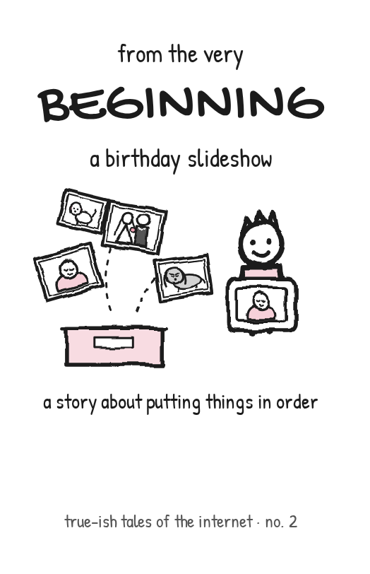
true-ish tales of the internet · no. 2
a kid makes a surprise slideshow for grandma's 80th, and the photo frame sorts her life digit by digit. grandma gets married before she's born.
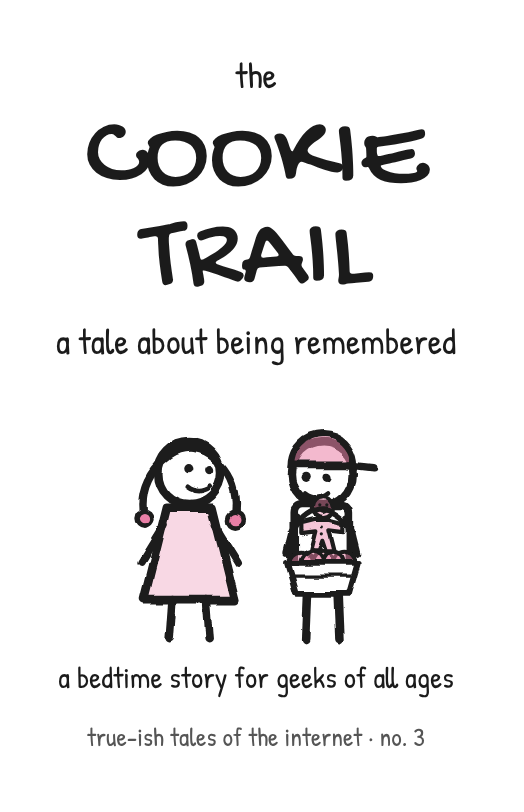
true-ish tales of the internet · no. 3
gretel just wants the village shops to remember her. then a tiny gingerbread man starts turning up in every window.
classic tales, retold as engineering cautionary tales.
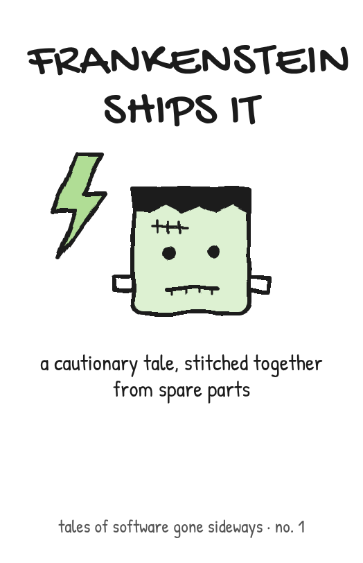
tales of software gone sideways · no. 1
a creature stitched together from spare code wakes up on a friday, just in time to watch its maker ship it and go home.
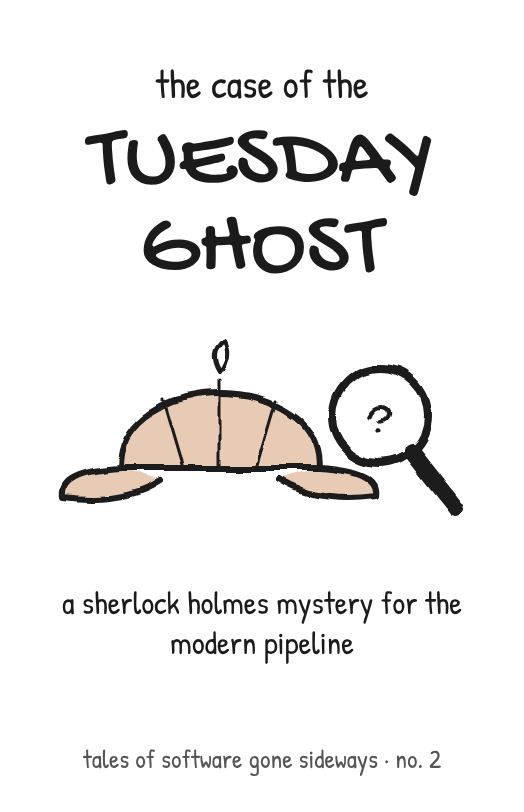
tales of software gone sideways · no. 2
the build fails only on tuesdays, and the log file is empty. holmes follows the evidence to a culprit nobody remembered.
a naturalist's field guide to the creatures of software.
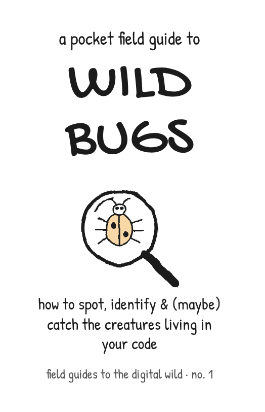
field guides to the digital wild · no. 1
a naturalist's guide to the heisenbug, the bohrbug, the schrödinbug and the mandelbug. with a sightings checklist.
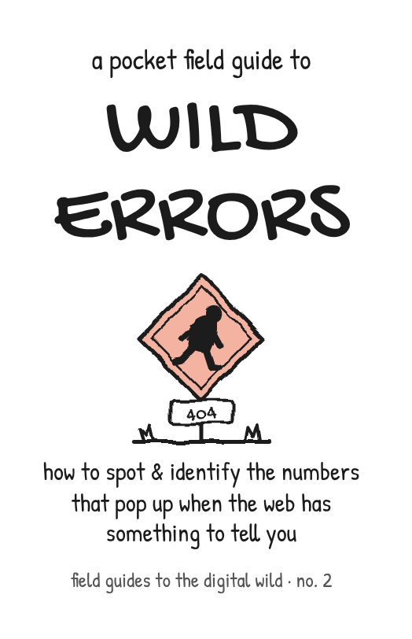
field guides to the digital wild · no. 2
a naturalist's guide to the 301, the 404, the 403 and the 503, plus the rarest one of all: the protected 418 teapot.